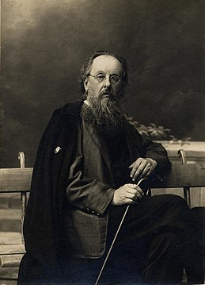

Ціолковський Костянтин Едуардович
Костянтин Едуардович Ціолковський (5 (17) вересня 1857 — 19 вересня 1935) — радянський вчений-теоретик, є одним із засновників ракетобудування та сучасної космонавтики, педагог, письменник.[5]
Автор науково-фантастичних творів, прихильник і пропагандист ідей освоєння космічного простору. Його роботи надихнули таких провідних радянських ракетних інженерів, як Сергій Корольов і Валентин Глушко і зробили вагомий внесок в успіх радянської космічної програми.